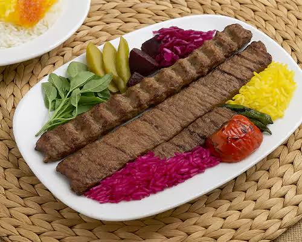
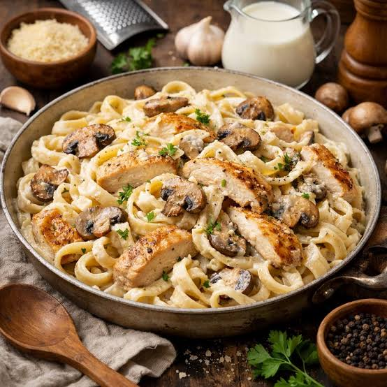

- کباب
- خورشت قیمه
- پاستا
کباب یکی از معروفترین و محبوبترین غذاهای موردعلاقهٔ مردم آسیا است. در تهیه و پخت بیشتر کبابها از گوشت قرمز بریده یا چرخشدهٔ بره، گوسفند، گاو، یا گوساله استفاده میشود. همچنین، در مراحل تهیهٔ اکثر کبابها از پیاز و ادویهجات استفادهٔ فراوان میشود. نوعی از آن در ایران با نام کباب چنجه نامیده میشود و نیز در کشورهای غربی با نام شیشکباب شناخته شده و معروف است. کباب

خورشت قِیمه یا خورشت لپه از غذاهای آشپزی ایرانی است. این خورش در میان ایرانی ها و عراقیها غذایی پرطرفدار است و برای پخت آن از پیاز سرخ شده، رب گوجه فرنگی، لپه، گوشت قرمز، سیب زمینی سرخ شده به همراه لیموی خشک (لیمو عمانی) به عنوان طعمدهنده استفاده میشود. ادویهای که معمولاً در اواخر زمان طبخ به آن اضافه میشود دارچین است، برای دادن عطر ویژه به آن مقداری هل و گلاب میتوان اضافه کرد. این خورش به همراه چلو سرو میشود. خورشت قیمه

به معنی خمیر، یک اصطلاح عمومی برای گونههای مختلف ایتالیایی رشته فرنگی (نودل)، درست شده از خمیر آرد، آب یا تخم مرغ است. پاستا حدوداً به ۳۵۰ شکل مختلف موجود است. چند شکل معروف پاستا اسپاگتی، ماکارونی، فوسیلی، ریگاتونی، شلز، کاپلینی، پنه، لینگوئینی، بوکاتینی، تالیاتله، کامپانل، تورتلینی، راویولی و لازانیا (به صورت ورقهای) هستند. پاستا

جدول غذاها
| اسم غدا | مقدار غذا | کالری |
|---|---|---|
| کباب | 100 گرم | 260 کالری |
| خورشت قیمه | 100 گرم | 200 کالری |
| پاستا | 100 گرم | 158 کالری |